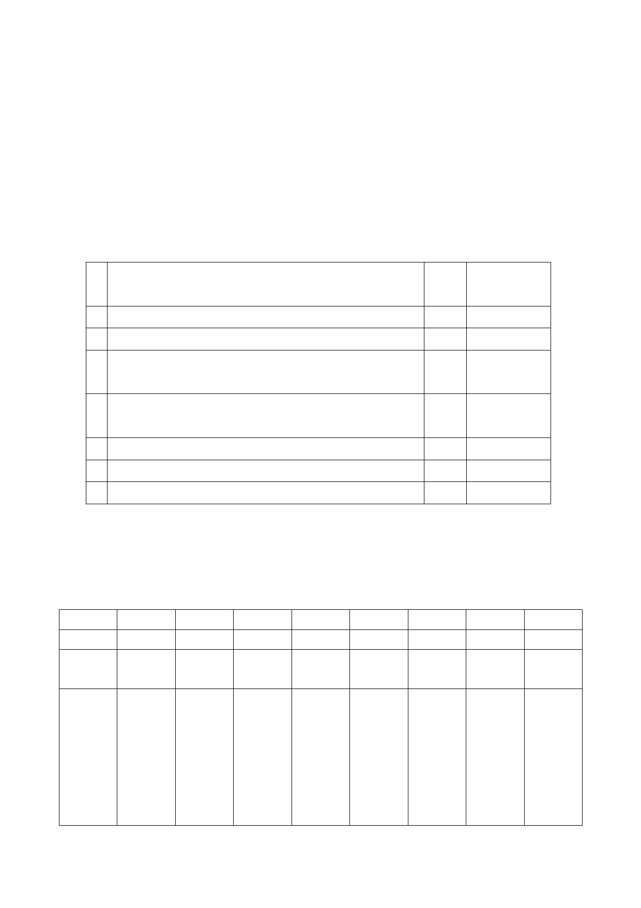

發計畫（科技軸帶組），經市府審查通過推薦，爰依都市計
畫法第24條提出本細部計畫變更案。
二、 8案位於基隆河(中山橋至成美橋段)大彎北段地區，由土地所
有權人自行開發興建。
三、 公民或團體陳情意見：8案通案陳情意見（詳如附件一），個
案部分共計3件。
四、 變更計畫內容：本地區市府於98年12月22日以府都規字第
09838862600號函公告公開展覽8案（詳如一至八案）。
1 金泰段 79、79-1、79-10 等 3 筆等土地（供一般商業使 A 7 長虹建設
用）
2 金泰段 105（供商業購物中心使用）
A 2 福華大飯店
3 金泰段 105-1（供商業購物中心用）
A 2 健豪建設
4 金泰段 105-2、105-3 等 2 筆土地（供商業購物中心使 A 2 忠泰建設
用）
奇泰建設
5 金泰段 16-4（供娛樂購物中心使用）
B 2 興富發建設
海鉅建設
6 金泰段 16-5（供娛樂購物中心使用）
B 2 全聯實業
7 金泰段 24-1 等 7 筆土地（供娛樂健身使用）
B 4 宏普建設
8 金泰段 32-2 等 8 筆土地（供娛樂健身服務業使用） B 1 0 興富發建設
五、 本計畫區得適用「徵求參與『促進都市再生2010年臺北好好
看』開發計畫案」所申請容積獎勵項目如下表：
編號
1
2
3
4
5
6
7
街廓
A7
A2
A2
A2
B2
B2
B4
申請者 長虹 福華 健豪 忠泰 興富發 全聯 宏普
奇泰 海鉅
臺北好 1.廣場式 1.廣場式 1.廣場式 1.廣場式 1.廣場式 1.廣場式 1.廣場式
好看申 2.挑空室內 2. 跨堤設 2.挑空室內 2.地陎人行 2.立體人行 2.觀景平台
請項目
施、觀景
3.挑空室內 3.挑空室內 3.挑空室內
平臺、跨
街平臺、
立體人行
3.挑空室內
8
B10
興富發
1.廣場式
2.地陎人行
3.挑空室內
- 26 -